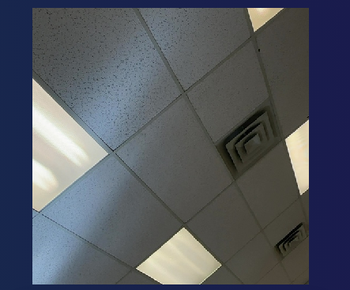

t1a14-AI-edgeimpulse-illia.html
Tried making a classification model on Edge Impulse
Your job, if assigned for other webpages, is to make other models with your cell or a computer
with a webcam.
- Visual Classification - Done
- Wake word (sound)
- Motion (Movement x, y, z)
- Visual Object Direction FOMO (faster objects more objects)
- Visual Regression
- Visual Anomaly Detection
Data Entry

Data Totals
Data Explorer
Confusion Matrix

Unknown Correct

Pen Correct